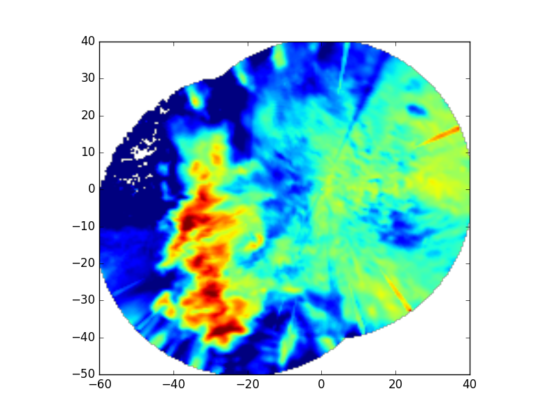

Map two radars to a Cartesian grid¶
Map the reflectivity field of two nearby ARM XSARP radars from antenna coordinates to a Cartesian grid.
Python source code: plot_map_two_radars_to_grid.py
print(__doc__)
# Author: Jonathan J. Helmus (jhelmus@anl.gov)
# License: BSD 3 clause
import matplotlib.pyplot as plt
import pyart
# read in the data from both XSAPR radars
XSAPR_SW_FILE = 'swx_20120520_0641.nc'
XSAPR_SE_FILE = 'sex_20120520_0641.nc'
radar_sw = pyart.io.read_cfradial(XSAPR_SW_FILE)
radar_se = pyart.io.read_cfradial(XSAPR_SE_FILE)
# filter out gates with reflectivity > 100 from both radars
gatefilter_se = pyart.filters.GateFilter(radar_se)
gatefilter_se.exclude_transition()
gatefilter_se.exclude_above('corrected_reflectivity_horizontal', 100)
gatefilter_sw = pyart.filters.GateFilter(radar_sw)
gatefilter_sw.exclude_transition()
gatefilter_sw.exclude_above('corrected_reflectivity_horizontal', 100)
# perform Cartesian mapping, limit to the reflectivity field.
grid = pyart.map.grid_from_radars(
(radar_se, radar_sw), gatefilters=(gatefilter_se, gatefilter_sw),
grid_shape=(1, 201, 201),
grid_limits=((1000, 1000), (-50000, 40000), (-60000, 40000)),
grid_origin = (36.57861, -97.363611),
fields=['corrected_reflectivity_horizontal'])
# create the plot
fig = plt.figure()
ax = fig.add_subplot(111)
ax.imshow(grid.fields['corrected_reflectivity_horizontal']['data'][0],
origin='lower', extent=(-60, 40, -50, 40), vmin=0, vmax=48)
plt.show()
Total running time of the example: 16.63 seconds